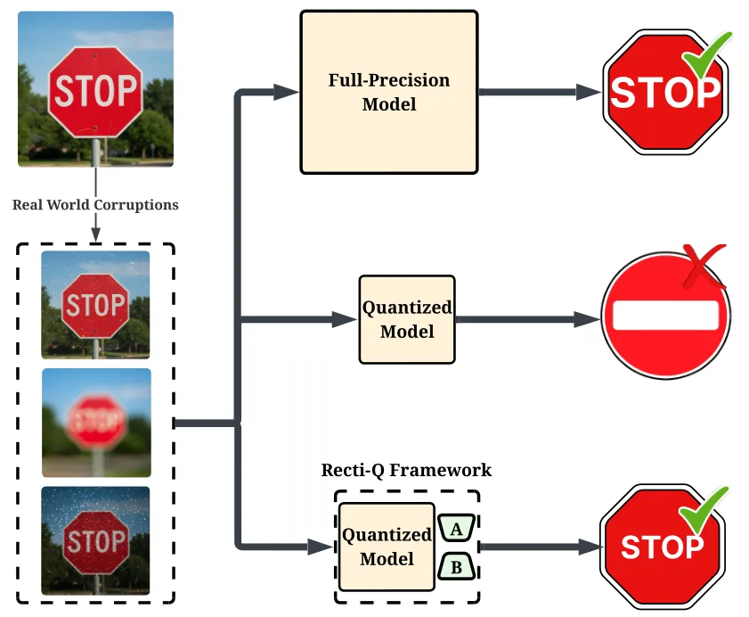
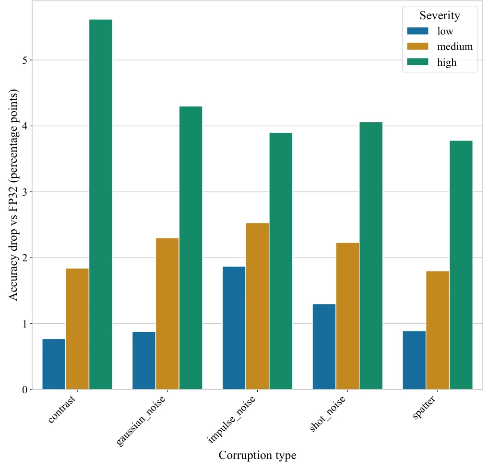
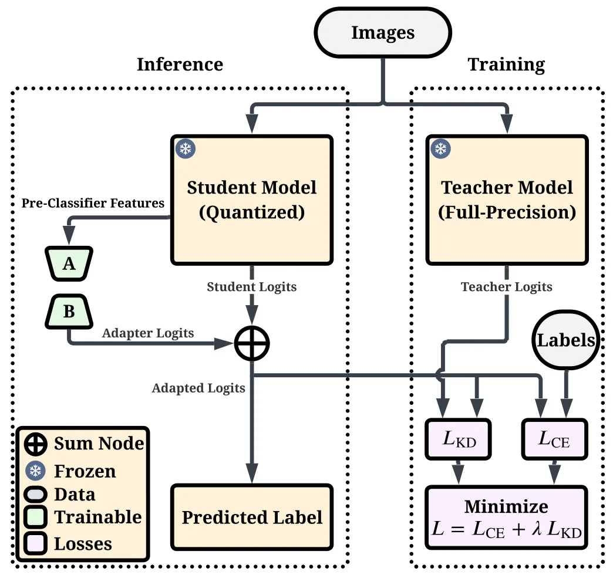
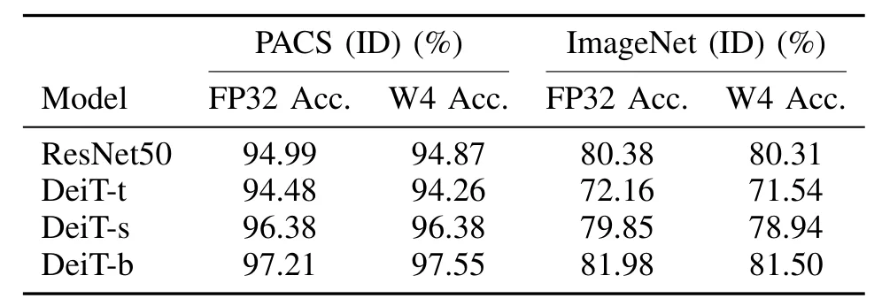
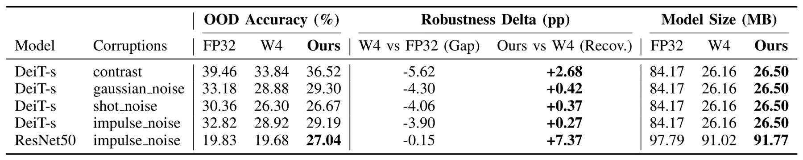
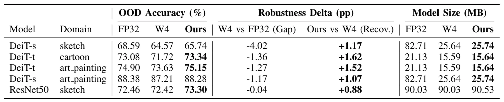
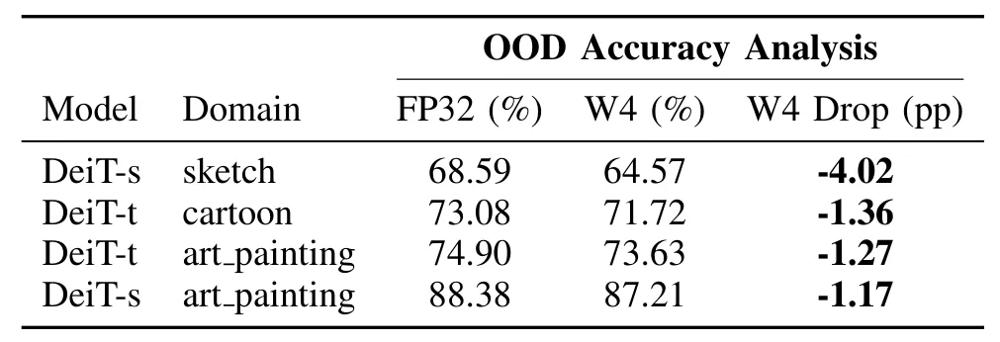
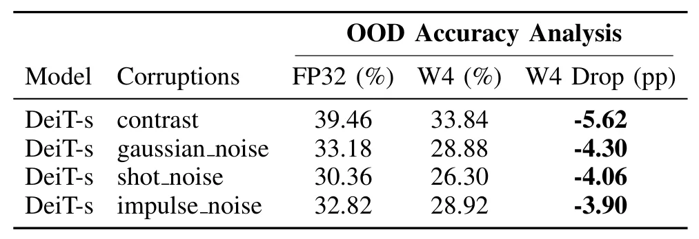
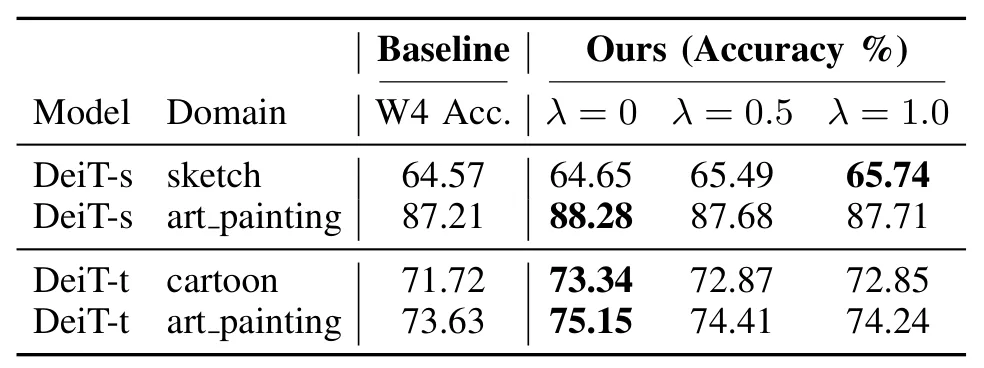

Recti-Q：面向边缘机器人的 OOD 鲁棒量化感知Recti-Q: Feature-Space Rectification for Out-of-Distribution-Robust Quantized Perception in Edge Robotics
对边缘机器人视觉部署有现实意义，但证据来自分类 benchmark，尚未验证 VO/SLAM 的匹配、深度或位姿任务。
一句话工作总结
冻结量化 backbone，仅训练轻量 LoRA head，修补 4-bit PTQ 在噪声、天气和新环境下的 OOD 鲁棒性缺口。
摘要
本文指出 post-training quantization 虽常保持 clean in-distribution accuracy，却会在传感器噪声、恶劣天气和新环境等分布偏移下形成 Quantization-Induced Robustness Gap。Recti-Q 冻结量化视觉 backbone，仅用 source data 训练小型 classifier-head LoRA adapter，在 CNN 与 Transformer 上均可使用且无需 teacher。其参数开销低于 1%，最小约 6 KB，保留超过 99% 的 PTQ 内存节省，并支持低带宽 OTA 鲁棒性补丁；在 ImageNet-C 和 PACS 上可恢复显著部分鲁棒性。
Robotic perception pipelines increasingly rely on large vision backbones deployed on SWaP-constrained edge platforms, making post-training quantization (PTQ) attractive for real-time inference. However, while PTQ often preserves clean in-distribution accuracy, we show that it can substantially degrade reliability under deployment-relevant distribution shifts (e.g., sensor noise, severe weather, and novel operating environments), creating a Quantization-Induced Robustness Gap. Across foundational vision benchmarks (ImageNet-C and PACS), 4-bit PTQ models exhibit pronounced robustness degradation despite negligible ID accuracy loss. To address this, we propose Recti-Q, a lightweight feature-space rectification framework that freezes the quantized backbone and trains a small classifier-head LoRA adapter using only source data. Recti-Q is architecture-agnostic across CNNs and Transformers, supports efficient teacher-free training, and recovers a significant portion of the lost robustness, in some cases matching or exceeding FP32 performance. At less than 1% parameter overhead (as small as 6 KB), Recti-Q preserves over 99% of PTQ memory savings, adds negligible compute, and enables low-bandwidth Over-The-Air (OTA) resilience patching for deployed robotic fleets operating in unpredictable physical environments.
中文解读摘录
- 作者：Hamidreza Yaghoubi Araghi, Parastoo Pilevar, Ming C. Lin
- 价值判断：指出 4-bit PTQ 可能在 clean in-distribution accuracy 几乎不变时显著放大天气、传感器噪声和新环境下的可靠性缺口，对边缘部署的 SLAM 语义/视觉前端有间接价值。
- 技术要点：冻结量化 backbone，仅用 source data 训练 classifier-head LoRA adapter；参数开销低于 1%，最小约 6 KB，支持低带宽 OTA resilience patching。
- 领域边界：实验基于 ImageNet-C 与 PACS 分类 benchmark，尚未证明对 VO/SLAM feature、depth、pose 或 loop closure 有收益。
- 链接：arXiv · PDF
图表/页面预览
{kind=link}

{kind=link}

{kind=link}

{kind=link}

{kind=link}

{kind=link}

{kind=link}

{kind=link}

{kind=link}
